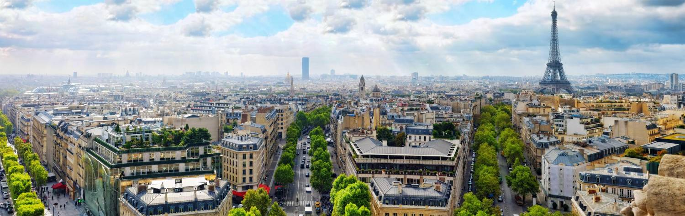

The largest country in Europe and, culturally and historically, one of the most influential
in the world, France has a reputation that precedes her. Before even visiting, you already
know about the famous boulevards, the gourmet cuisine, the fabulous fashions and stylish cafes.
You may have heard the stereotypes, about haughty French waiters, pervasive cigarette smoking
and smelly cheese. To put the record straight: the waiters are formal rather than friendly,
smoking is on the decline, and strong cheeses are decidedly optional. France is a country of
complexities. To truly understand its allure, you have to visit.
Centuries of history have shaped France’s rich heritage, and the buildings speak volumes:
from the medieval city of Carcassonne to the Renaissance chateaux of the Loire Valley, and the
magnificent 19th century Haussmann boulevards in Paris. You can imagine scenes of the Belle Epoque
at the Moulin Rouge as vividly as World War II battles at Omaha Beach in Normandy. Despite its
weighty past, France is a thoroughly modern nation. Alongside the ancient castles and cathedrals
are emphatically 21st century innovations: from the 300 kilometers-per-hour TGV rail service,
to the Pompidou Center of Modern Art in Paris and a stadium-sized underground cathedral in Lourdes.
France is defined by its diverse topography. The spectacular landscape ranges from the poppy-strewn
plains of Picardy to the rolling hills of Champagne, the snowy peaks of the Alps to the serene
shores of the Mediterranean Sea. Each region has its own unique character. People have different
accents all over the country, and the gastronomy varies as much as the scenery. President
Charles de Gaulle once lamented about the difficulty of governing a nation with over 300
types of cheese – but for visitors, the variety of culture and cuisine is something to relish!
